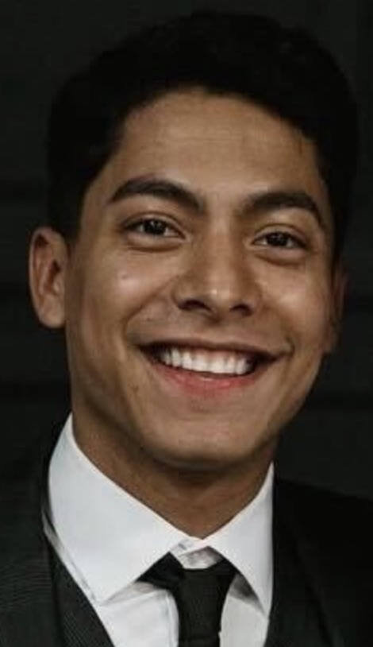
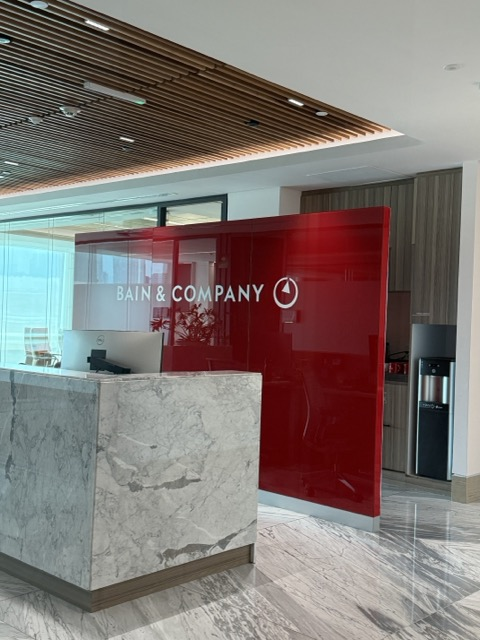
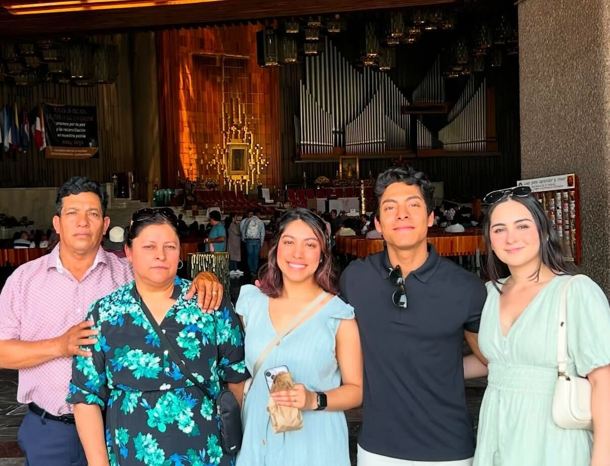
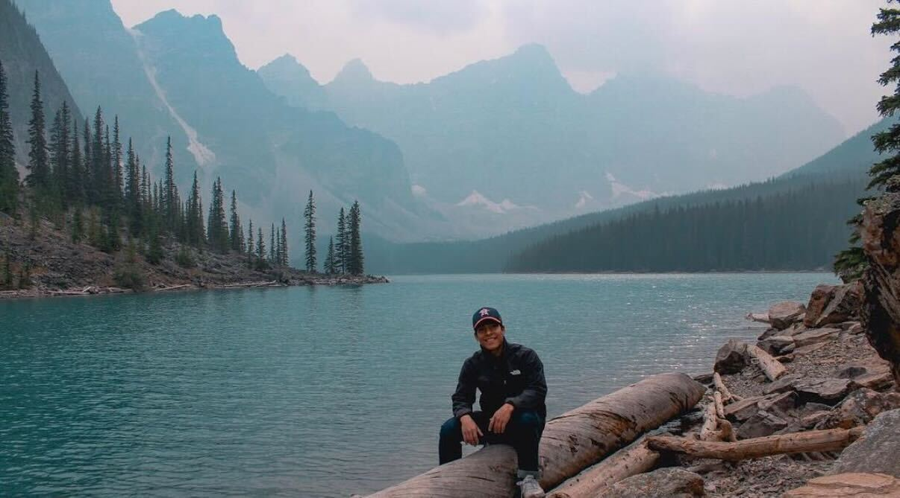

Intro

I'm Manny, a first-generation college graduate and product leader who's passionate about building technology that makes a real difference for people and organizations.
Currently, I'm a Director of Product Management at Umbrage (Bain & Company), leading product initiatives across the US and Latin America. I work in complex, regulated industries like healthcare, finance, energy, and manufacturing, where understanding people's needs and collaborating across teams is essential to delivering meaningful solutions.
Before Umbrage, I spent years at PwC contributing to enterprise products used by Fortune 500 companies, and at Weaver where I got my start in professional services. I also completed executive education at Duke University because I believe learning never stops.
I care deeply about building great products and building great teams. For me, those two things go hand in hand. Check out my work to learn more about what I've been part of.
Work

PwC Products & Technology
At PwC, I had the opportunity to contribute to enterprise products used by Fortune 500 companies worldwide, working alongside talented engineers, designers, and consultants.
One of the challenges we tackled was helping development teams move faster without sacrificing quality. That's where Code Intelligence came in. We built a multi-agent system where specialized AI agents each handled different tasks: one generated documentation, another wrote tests, and another helped modernize legacy codebases. It gave engineers more time to focus on building instead of documenting.
As AI agents became more central to enterprise workflows, companies needed a way to manage them at scale. Agent OS became the answer, giving organizations a single platform to orchestrate and govern AI agents across their systems while keeping humans in the loop.
Concourse started as a way to solve a collaboration problem: how do you get 30,000+ tax, deals, and consulting professionals working together seamlessly on client engagements? We built a real-time platform that brought together digital tools, shared assets, and cross-team visibility in one place.
With Model Edge, we addressed the growing complexity of AI governance. Financial institutions needed a way to manage hundreds of models while staying compliant. We built a platform that handles the full model lifecycle, from development to validation to monitoring. It won "Governance, Risk, and Compliance Product of the Year" from Risk.net.
Connected Solutions tackled a different kind of problem: helping organizations understand what's happening in their physical spaces. Using IoT sensors and 26 patented technologies, we built a platform that tracks assets, monitors environments, and surfaces operational insights across hospitality, healthcare, and manufacturing.

Umbrage (Bain & Company)
Director of Product Management, US & Latin America
I now lead product initiatives at Umbrage, a digital product studio acquired by Bain & Company in 2023. Our team designs, builds, and ships software that solves real business problems for our clients.
My work spans multiple industries: healthcare, retail, aviation, logistics, finance, oil and gas, supply chain, manufacturing, and telecommunications. I focus on 0-to-1 product development, partnering with stakeholders to understand their challenges, define requirements, and guide products from concept to launch.
A big part of my role has been expanding our presence in Latin America. I've built relationships with clients and teams across Mexico, Brazil, Argentina, and beyond, and through successful delivery of products and projects, we've continued to grow opportunities in the region. It's been rewarding to see how strong partnerships and good work open doors.
The common thread across all my work is taking complex, ambiguous challenges and turning them into products that actually get used. That's the part I love most.
About

I'm a first-generation college graduate, and that shapes how I see the world. My parents immigrated to this country with nothing. No connections, no safety net, and a language barrier that made everything harder. They raised five kids, built careers from the ground up, and taught us that when one door closes, you find another way. That lesson stuck with me.
Growing up, I learned the value of hard work and showing up every day ready to give my best. College was always the goal, and I'm grateful I earned a full-ride scholarship to the University of Houston and graduated debt-free. During school, I worked, completed internships, served on student organization boards, and got involved with a local startup incubator. Those experiences shaped how I approach problems today: with curiosity, humility, and a belief that the best ideas can come from anywhere.

My career has taken me from Weaver to PwC, where I contributed to award-winning enterprise products, and now to Umbrage, a digital product studio acquired by Bain & Company in 2023. Along the way, I've learned that the best outcomes come from listening, staying curious, and empowering the people around you. I care deeply about helping teams do their best work and creating environments where everyone can contribute.
Staying connected to my community matters to me. I've served on the Treasurer Committee for ALPFA Houston, overseeing financial reporting for the chapter, and supported the Texas ACG Capital Connection, one of the largest private equity events in the country. I believe in lifting others up and creating opportunities for those coming behind me.
Everything I have is built on the foundation my parents created. I carry that with me every day, and it drives me to keep learning, keep growing, and keep finding ways to make an impact.
Beyond Work

When I'm not working, you'll usually find me staying active or planning my next trip. I played semi-professional soccer for Dutch Lions FC, a Netherlands-affiliated club based in Houston, and still love the game today.
I also enjoy running and have completed a few races over the years. It's a good way to clear my head and stay competitive with myself.
I love to travel too. Whether it's exploring a new city, visiting another country, or hiking through a national park, getting out of my routine gives me fresh perspective and reminds me how much there is to learn from the world around us.
Contact
I'm always happy to connect with fellow product leaders, founders, or anyone interested in sharing ideas and learning from each other.
Feel free to reach out on LinkedIn or send me an email. I'd love to hear from you.